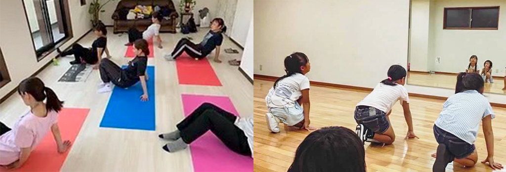
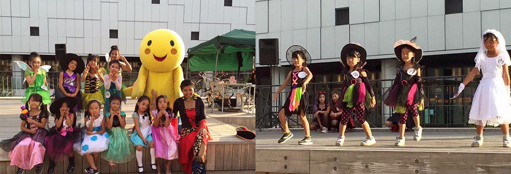
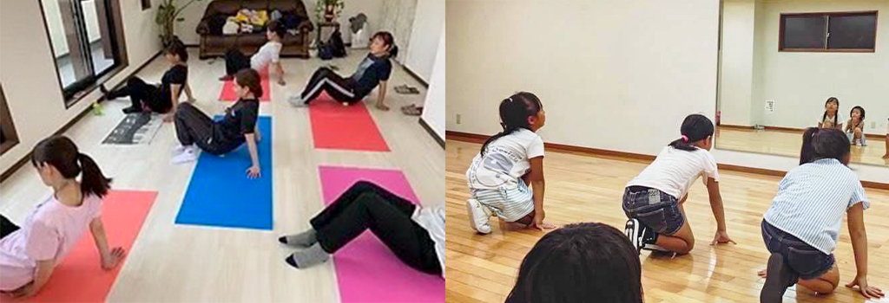
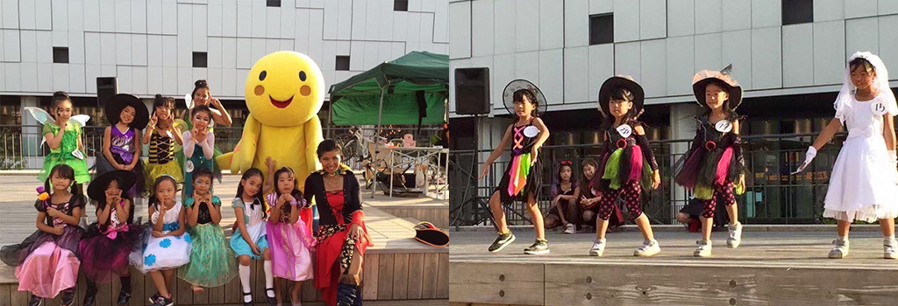

【ストレッチ・体操・ダンス】
運動をすることで正しい使い方を知り、小さな体のお悩みを改善、
将来困らない筋力をつけ、健康と安心、笑顔をお届けします。
▶振付だけでなく体の仕組みを利用し、身体に負担の少ない動きを取り入れたレッスン。
健康維持をしながら、楽しく音楽とダンスをすることで生きる活力を養い、子供から大人まで各年齢に応じた基礎動作や
有酸素運動を取り入れ、生きる上で必要不可欠な筋トレと非日常リズムを取り入れ脳の活性化する上で、大腿四頭筋・下腿三頭筋・
ハムストリングなど大きな筋肉を動かすことにより基礎代謝を高めダイエット・健康へと導き、
自己肯定感・自尊心を養い最大に表現できるようになります。
<チャップススクールのおすすめ !!>
1、未経験の初めての方から入りやすい基礎から学べる
2、年齢別にクラスが分かれており、学校仕事帰りに受けやすい!!
（幼児・小学低学年・高学年、中学生～社会人）
3、昔からダンスや運動をやってみたかった方
4、スタートの年齢が遅くて不安、今更習うことに躊躇している方
5、30代～40代から運動やダンスを頑張りたい方
☆キッズレッスン（3.4.5.6歳、小学生対象）☆
お子様1人1人に合わせたマンツーマンレッスンも可
振付だけでなく体の仕組みを利用し、身体に負担の少ない動きを取り入れたキッズレッスン。
健康維持をしながら、楽しく音楽とダンスをすることで「自尊心」「自己肯定感」「生きる活力」を養います♪♪
☆大人ストレッチ体操（30.40以上対象）☆
人間の体を支える大事な３つの土台「背骨」「骨盤」「足」のうち、どれかに原因があることが多いです。
骨盤のゆがみは、普段の姿勢やクセ、筋肉の衰えなどにより、骨盤まわりにあるお尻や太ももなどの大きな筋肉がアンバランスになることで生じます。
ストレッチをする事で.体の動きやすさの改善筋肉の柔軟性の改善リラクゼーション効果自律神経の乱れの改善動脈硬化予防に繋がります
※理学療法を独学で学び、逆効果のストレッチもあるので気をつけましょう！
<体験生・生徒の声>
質問LINEにて受付
スタジオ:兵庫県姫路市手柄1-78-1 ローズハイムⅡ棟 201号